NBC Animation Work
Joining NBC Sports as an animator has allowed me to get full access over all of the company's packages whether I am tasked with versioning, templating, bringing design frames to life, or updating projects to fit current needs. While the work below isn't built up from the ground by me, these are some examples of the many graphics I have dipped my hand in and brought to life for air.
NHL Regular Season Coverage
2019-2021 Seasons
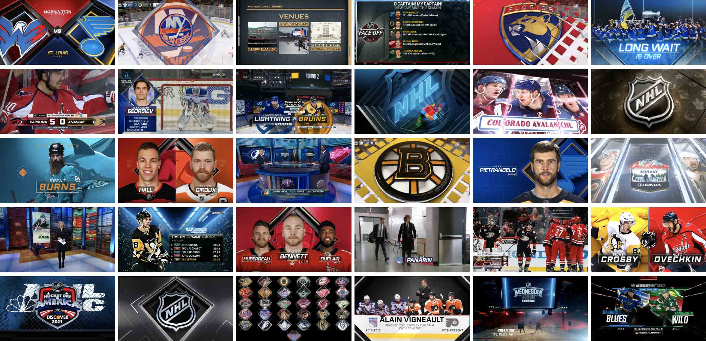A total package redesign was done in the summer of 2019 by a team of designers and I, and I was tasked with versioning out every team interstitial (1 Player, 2 Player Matchup, Line, Team, and Team Matchup Interstitial), titlecard, transitions, and starting goalie pieces for all 31 teams (and for the Seattle Kraken when they joined in 2021). During regular season coverage, I was the point man for all studio monitors, new insert packages to be made, edits to the open/disclaimer/hallmark, specialty cutouts, rollouts, package tags, stingers, and anything else the producers requested.
2018-2019 Season
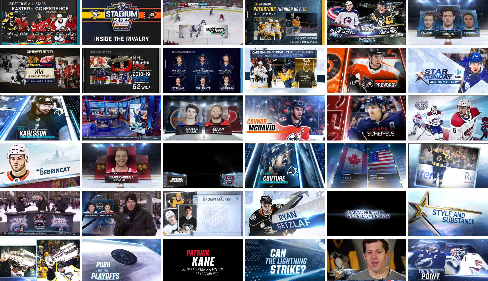I worked as an animator for NBC's coverage of the NHL starting in the 2018-2019 season and carried the package through to the last broadcast before the rights ended after the 2020-2021 season, making all different types of network graphics, show packages, event insert packages, lower thirds, and other tease elements. My coverage began with the NHL Live Pregame Show and regular season hockey and developed into including the major broadcasts of Wednesday Night Hockey, the All-Star Game/Skills Competition, the Winter Classic, Stadium Series games, and Hockey Day in America. Seeing the package through 3 seasons and 3 Stanley Cup Finals, a complete redesign, a successful and hectic quarantined-bubble playoff, and being the main animator on the property in the final year has been the proudest achievement of my career. Go Bruins...
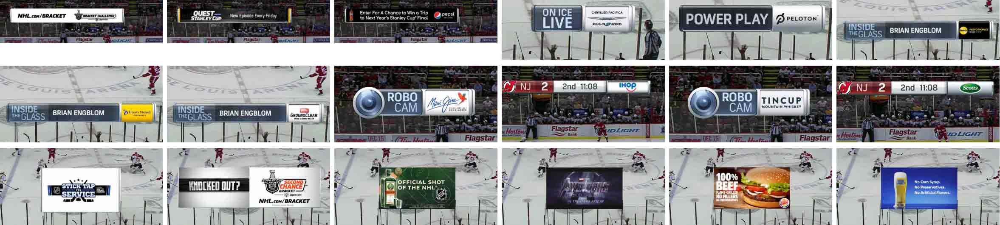As an in-game animator, my job also entailed doing ad sales work with our marketing department to fulfill external clients advertising interests in participating in broadcasts. Ad work included sponsored billboards, scorebar ads, content pods, and other advertising chips to be shown throughout games.
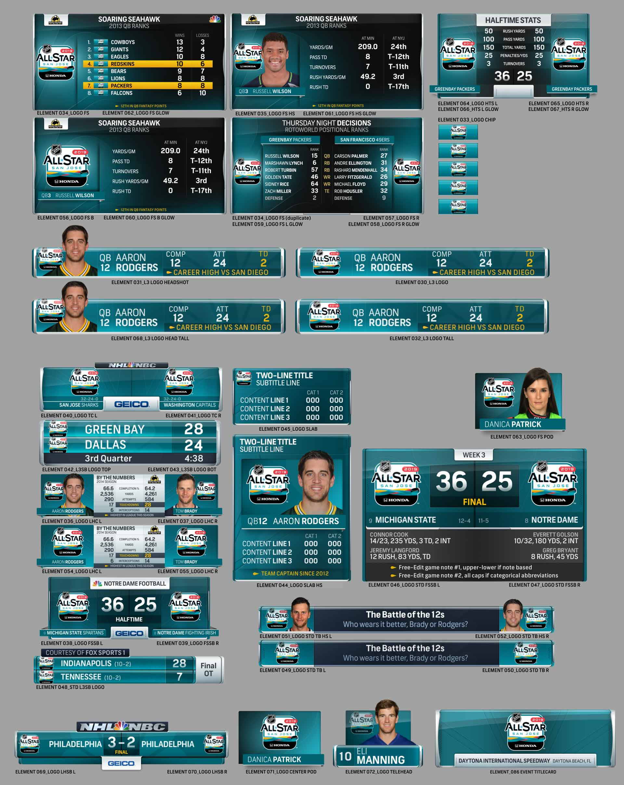 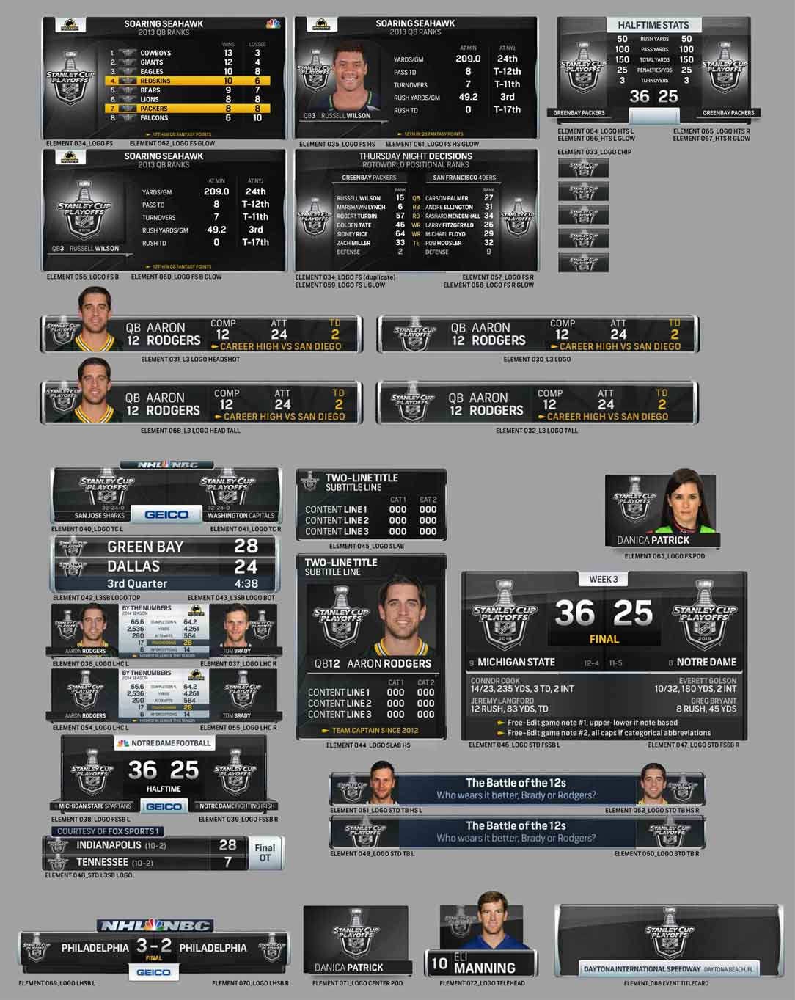 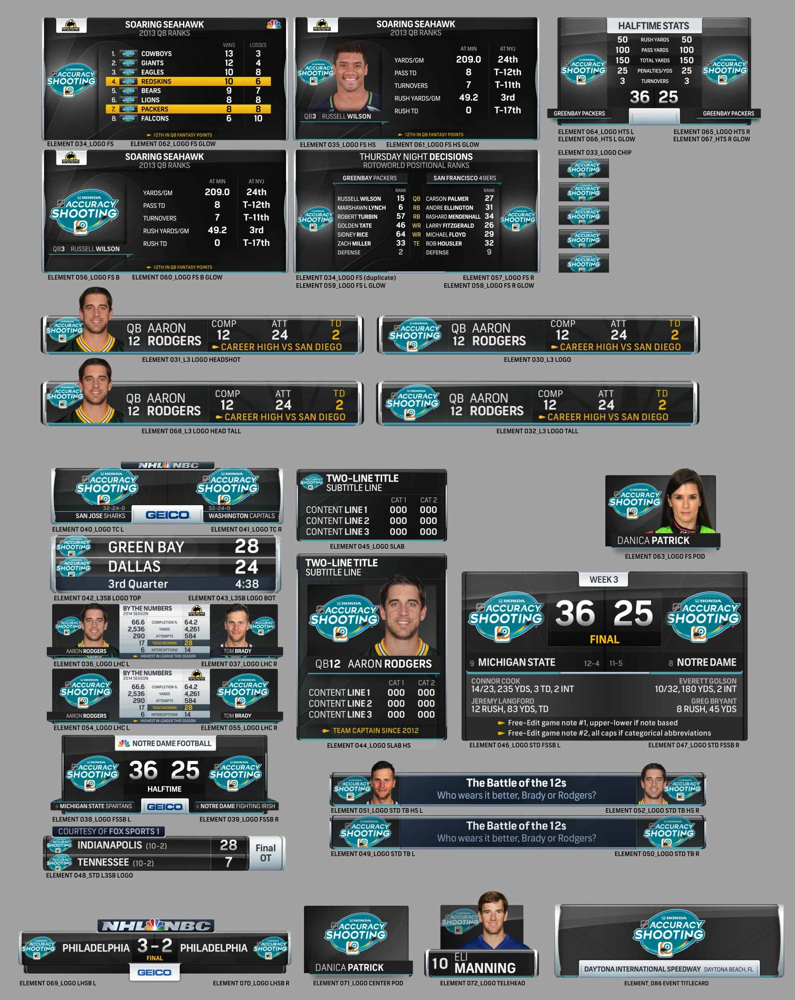 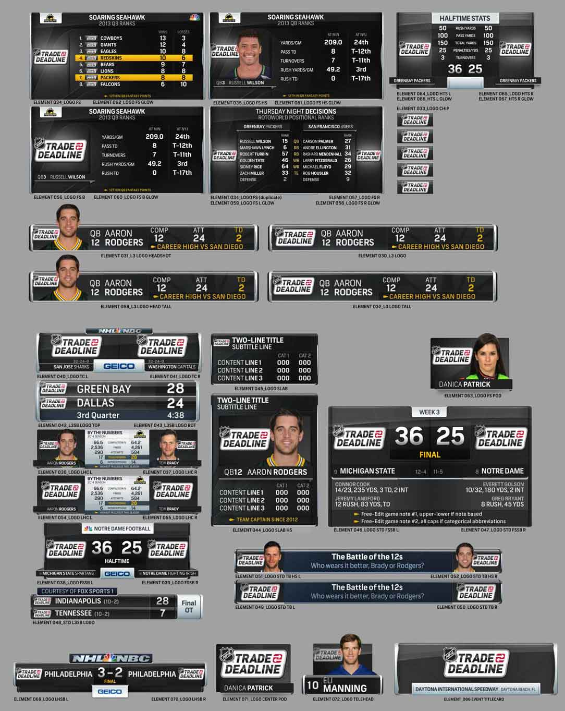 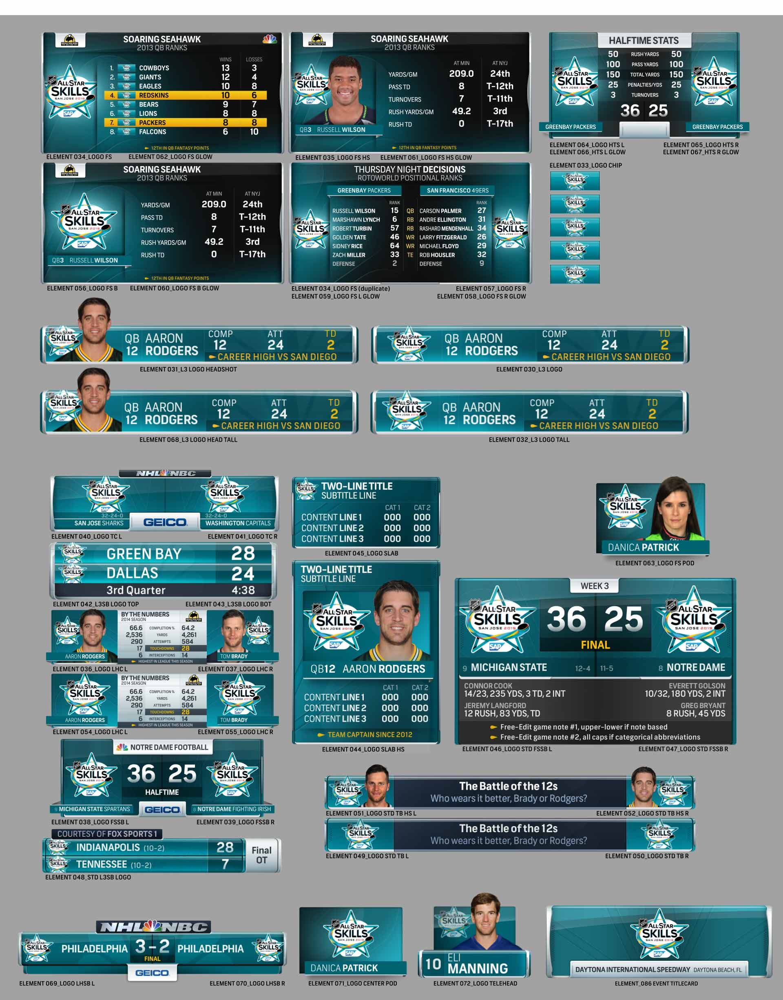Lastly, some insert packages made for broadcast on NBC Sports and NBC.
NHL Stanley Cup Playoffs and Final
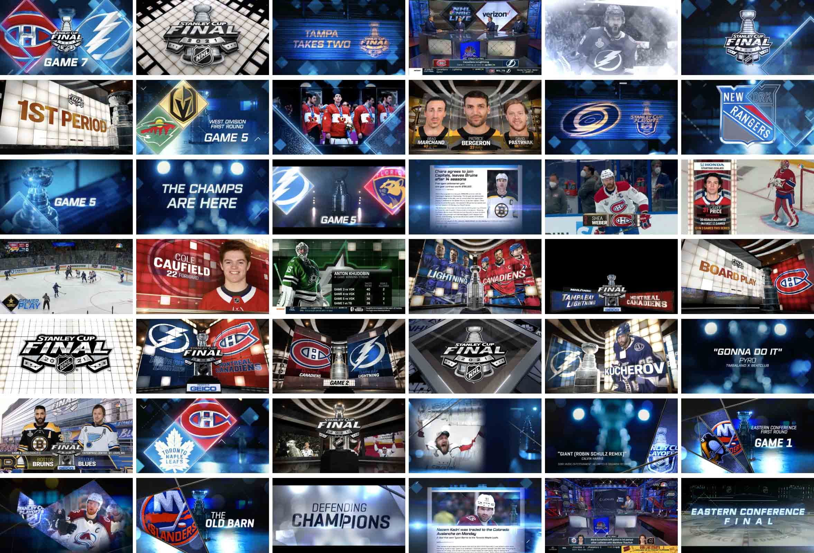The Stanley Cup Playoffs and Finals (and Qualifiers in the bubble year) have a unique package different from the regular season and I graciously worked on it from 2018-2021 (Bruins vs. Blues, Stars vs. Lightning, Canadiens vs. Lightning). With the 2019-2020 playoffs happening during the pandemic, it was the first NBC project I completed from my bedroom, and brought on the challenge of having 24 teams in the running with specialty playoff qualifiers graphics on top of the yearly quarterfinals, semifinals, conference finals, and Stanley Cup Finals package. Making art for empty arena broadcasts and bubble-related events was quite a fun task in building the storylines for our analysts to talk over.
Football Properties
2022 Super Bowl 56
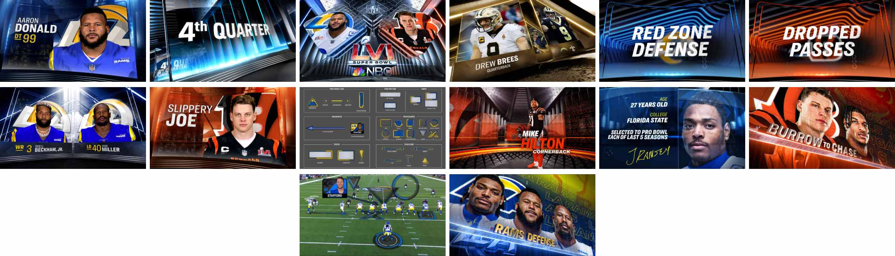While serving as an animator throughout the 2021-2022 SNF season, the 10-person team also spent time building the Super Bowl 56 package and I specifically built out the future telestrator. As the Super Bowl got closer, I was also tasked with versioning out interstitials for all 32 teams and completing bio pics, bumps, and our 1-player, 2-player, retro, and word interstitials for the big game, which won my team and I an Emmy for Outstanding Technical Team Studio on the Super Bowl LVI Pregame Show.
2021-2022 Sunday Night Football
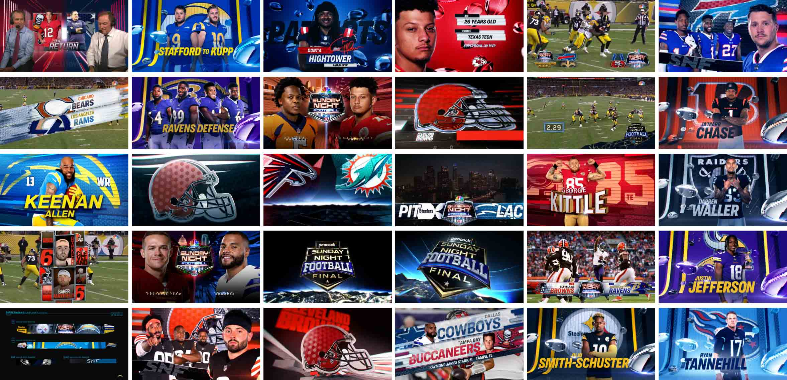Another task related to our NBC football properties began with assisting on the build for a new Peacock NFL show (Sunday Night Football Final, NBC's streaming show after SNF ends) right before the season started, along with tweaking the Cleveland Browns 3D logo and getting acquainted with the existing package for SNF by replacing all the 3D projects that required it. During the season, I was in charge of the weekly deliverables for Sunday Night Football, like QB Walkouts, Bio Pics, Final Acts, Stingers, Scoreboards, Titlecards, L3rd elements, Bumps, and Personality Tags. I also enjoyed building animations for the LA Rams Oculus digital scoreboard at Sofi Stadium for SNF games played there.
2022 United States Football League
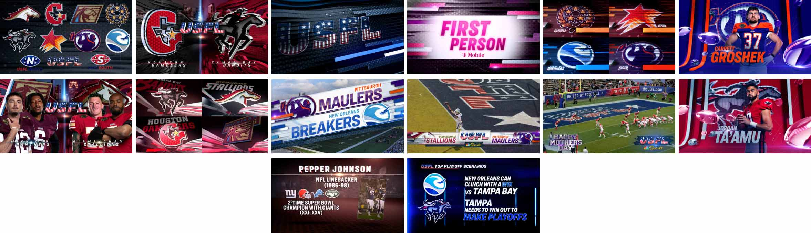Without having the NHL rights and the busiest season for NBC over (Super Bowl 56 and XXIV Olympic Winter Games at the same time), I was moved over to assist in building the new football league package for the the USFL, which shared broadcast rights with FOX. The package was modeled after the past SNF seasons as the SNF look was rebranded to the Super Bowl look after the season ended. After completion, I was the one to maintain the property throughout the season for the weekly production requests.
2024 MaddenCast
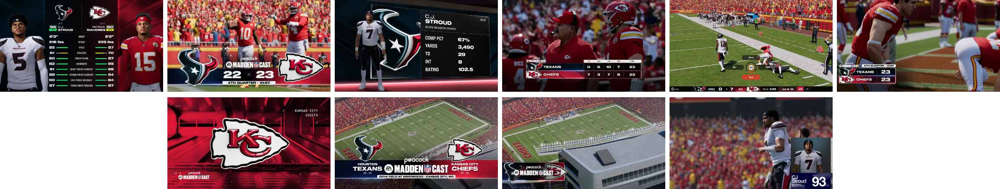On Dec. 21, 2024, Peacock streamed the first EA Sports Madden NFL Cast as an alternate way of watching the Texans and Chiefs saturday game. I worked alongside the SNF art director recreating assets given by EA to mimic the Madden video games, which included projects like building titlecards, player interstitials, transitions, player ratings adjusters, scoreboards, keying player green screen footage, and even recreating the pause screen.